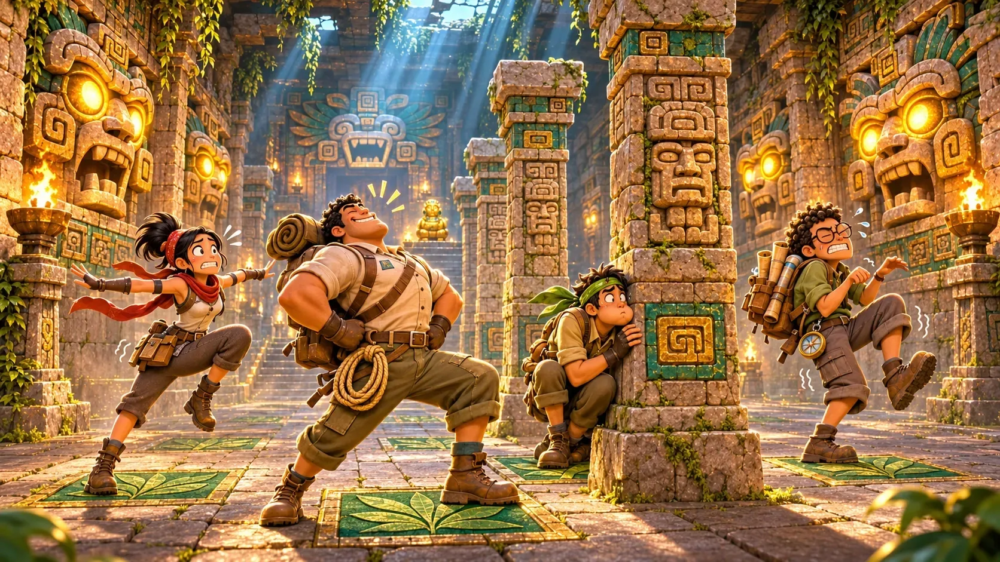

1 player
Solo Heist
Bank the Great Idol three times against the clock, with fixed beats you can learn. Gold, silver and bronze times.

Home / Game Types
Game type · Party heist
Steal the temple's idols, and freeze whenever its stone eyes open.
Sneak into the living temple, steal its golden idols, and freeze whenever the temple holds its breath.
Stone heads open their eyes on a drumbeat. Anyone still moving is blown back to the last shrine and drops their loot. Up to eight Climbers race, freeze, pose and steal idols from each other in four-minute rounds. Steal them, Climbers, and K'in will pretend she didn't see you.

The one rule
Each room has a watcher, a stone face with its own beat. While it sleeps, you move. When it stirs, its eyes glow orange and you have a second to find a spot. When it looks, its eyes blaze gold, and anyone who moves is seen.
Green leaf-glyph shade hides you. Standing emotes are safe, so every look ends in a row of Fortnite characters frozen in their best statue pose.

Idols
Small idols are worth 2 points, the Great Idol 5. Carry one to K'in's brazier to bank it. Stay close to a carrier for half a second and the idol jumps to you, but stealing during a look gets you caught too: steal the moment the eyes close.
The Great Idol glows, so shade won't hide its carrier, and taking it wakes the temple: every watcher breathes faster until it is banked.
The map
One temple interior, four rooms deep, with the Serpent Run along its side. Each room breathes at its own tempo, so every trip is a choice between the safe way through the shade and the fast way through the open.
| Room | What happens there |
|---|---|
| Entry Hall | A practice face that teaches the rule before the round starts, and K'in's brazier, where idols are banked. |
| Gallery of Eyes | Twin heads with a random beat, pillars to hide behind and green leaf-glyph shade. |
| Spike Court | The Sun Mask keeps a steady, learnable beat. When it looks, the spikes rise: freeze, and be on a sun stone. |
| Jaguar Sanctum | The greedy room: short rests, long looks, and the Great Idol on its altar. |
| Serpent Run | The shortcut home. It opens only while someone carries the Great Idol, has no shade, and crosses a crumbling bridge. |

Room three
In the Spike Court, freezing is not enough. When the Sun Mask looks, the spikes rise everywhere except on the fourteen sun stones, so you need to stop on gold, not on grey.

The shortcut
Taking the Great Idol opens the Serpent Door. The corridor behind it is the fast way home, about fifteen seconds instead of forty, but its serpent watcher is quick, there is no shade at all, and its bridge crumbles under your feet.
A round
The practice face catches you once, so you learn the rule without reading a word.
The gates drop with a gong. Race for the idols.
The temple stirs: every watcher rests a little less.
Sunset: every idol is worth double, and the Serpent Door stays open.
The top three stand on the podium; everyone else freezes for the photo.
Modes and the future
1 player
Bank the Great Idol three times against the clock, with fixed beats you can learn. Gold, silver and bronze times.
2–8 players
Most points wins. Ties go to the most Great Idols banked, then to the fewest catches.
Into the series
The watcher becomes a stage in Trap Galleries and the Stone Sentries of the flagship; waking the temple becomes a curse in its Trials.